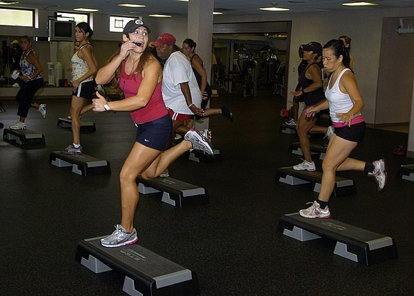

AEROBIC EXERCISE
Aerobic exercise (also known as endurance activities, cardio or cardio-respiratory exercise) is physical exercise of low to high intensity that depends primarily on the aerobic energy-generating process. "Aerobic" is defined as "relating to, involving, or requiring free oxygen", and refers to the use of oxygen to adequately meet energy demands during exercise via aerobic metabolism. Aerobic exercise is performed by repeating sequences of light-to-moderate intensity activities for extended periods of time. Aerobic exercise may be better referred to as "solely aerobic", as it is designed to be low-intensity enough that all carbohydrates are aerobically turned into energy via mitochondrial ATP production. Mitochondria are organelles that rely on oxygen for the metabolism of carbs, proteins, and fats.
Examples of cardiovascular or aerobic exercise are medium- to long-distance running or jogging, swimming, cycling, stair climbing and walking.